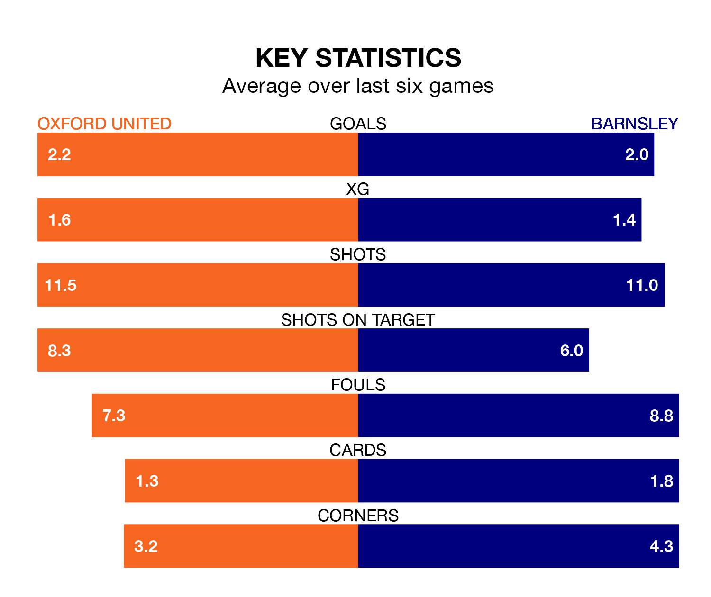

Barnsley face Oxford United on Tuesday seeking to protect their formidable unbeaten run in EFL League One.
The Tykes are unbeaten in 10, with six wins and four draws, ahead of the 7.45pm kick-off.
They face an Oxford team who have won four and drawn two over the same number of games.
With 50 goals in 26 games so far this season, Barnsley are the league's joint-second-highest scorers with 1.9 goals per game. And they are conceding fewer than average, letting in 30 goals at a rate of 1.2 per game.
Oxford are also above average scorers, with 1.7 goals per game, compared to a league average of 1.3. They have conceded 1.2 goals per game.
In Devante Cole, the Tykes have the league's sharpest shooter so far this season. He has notched 16 goals in 26 appearances.
His goal rate of one every 134 minutes is much quicker than that of Cameron Brannagan, United's top scorer with a goal every 298 minutes, and a total of seven goals in 24 games.
The away side are fifth in the table after 26 games, of which they have won 14 and drawn seven, earning 49 points.
The Us are one place behind Barnsley in sixth, with 15 wins and four draws putting them on the same number of points.
In the last five years, Oxford and Barnsley have played each other on four occasions. Oxford won one of them, Barnsley two, and they drew once.
On average, the Us scored 1.5 goals and the Tykes 1.8 in those matches.
Their last meeting was on August 19, when Oxford won 3-1 away.
Oxford's last match was on January 13, a 3-1 win against Carlisle United, with Mark Thomas Harris (two) and Tyler Goodrham getting the goals for the Us.
Barnsley beat Carlisle United 2-1 last time out, on January 16, with Cole and Herbie Kane on the scoresheet.
Tuesday's match will be refereed by Lee Swabey, who has taken charge of six EFL League One games so far this season, issuing one red card and booking 33 players. He has not awarded any penalties.
He is yet to oversee a match featuring either Oxford or Barnsley this season.
Updated: 09:18 (UTC), 23/01/24